配置路线（34 个任务）
教材 IMG 路径 + 手顺 + 原始画面，按 A–I 九组整理
教材 CO 模块的 34 个任务按 A–I 九组整理在本页：每组给出「这一组在干什么」，每个任务给出 IMG 路径 + 手顺步骤 + 原书画面 + 一句话要点。页面上的路径和截图都是从教材数据直接渲染的，没有手抄 —— 可以拿它当后台配置的作业单。
① 先按 组织 / 主数据 理解每个任务「为什么要做」；② 再照本页的 IMG 路径在自己的系统里点进去做；③ 做一步存一步，用任务号（t01…t34）当作业编号对进度。
提示：截图是教材环境的画面（中文 SAP GUI），你的系统里字段顺序可能略有不同 —— 以路径和字段名为准，不要背画面位置。任务 08、09 在教材里文字与步骤有缺漏，本页末尾给了一段补充手顺。
| 组 | 内容 | 任务数 | 任务号 |
|---|---|---|---|
| A 成本控制范围的组织与激活 | CO 的第一层「格子」：先建成本控制范围 C999 颐宁机械有限公司，用 OX19 把公司代码 C999 挂上去，再维护基本数据、激活成本中心会计等组件，并设定起始财年 2021。顺序反了后面全部报错。 | 3 | 01, 02, 03 |
| B 成本中心标准层次与成本中心组 | 一个任务做完全套：OKEON 维护标准层次 → 建 MFG 制造部 → 建总部 HQ → 在 MFG 下建 1001 Workshops / 1002 Warehouse，在 HQ 下建 2001–2006。创建时的黄色警告可以略过。 | 1 | 04 |
| C 成本要素主数据 | 初级成本要素（KA01，与 FI 损益类科目一一对应，类别 1）+ 次级成本要素（KA06，CO 专用）+ 成本要素组（KAH1）。任务是「改成本要素」与「维护缺省科目分配」（教材这两节文字与步骤有缺漏，本页末尾给了补充手顺）。 | 5 | 05, 06, 07, 08, 09 |
| D 作业类型与作业价格 | 建作业类型 LAB 人工工时 / MAC 机器工时 / SET 准备工时（KL01），建作业类型组（KLH1），再给成本中心 1001 维护计划作业量与价格（KP26）。这一组是「成本中心成本流向产品成本」的通道。 | 3 | 10, 11, 12 |
| E 编号范围与费用归集 | 先把成本控制凭证的编号范围分给 C999，然后开始有真数据：FB60 录房租发票 90000 元到成本中心 2001，FB50 录电费 25500 元到成本中心 2006 —— 费用的「账户分配」就是 CO 的入口。 | 3 | 13, 14, 15 |
| F 报表、重过账与统计指标 | 看报表（实际/计划/差异）→ 发现记错就用 KB61 重过账改成本中心 → 建统计指标 RENT 并录入各成本中心的面积（KB31N）—— 这三步是分配前的全部准备。 | 4 | 16, 17, 18, 19 |
| G 分配与分摊（成本中心之间搬成本） | 定义分配循环 DRENT（按面积分房租）并执行 KSV5 → 看结果；再定义分摊循环 AUTILI（按 75%/25% 分电费，用次级成本要素 802010）并执行 KSU5 → 看结果。这一组就是月结的核心动作。 | 7 | 20, 21, 22, 23, 24, 25, 26 |
| H 内部订单类型与结算配置 | 为「国内用户大会」建订单类型 PMKT 市场活动与编号范围，检查结算参数文件的设置，维护分配结构 A1（接收方类型 CTR + 结算成本要素 803010），最后给结算凭证分编号范围。 | 4 | 27, 28, 29, 30 |
| I 内部订单业务与结算 | 用 KO04 在 PMKT 下建订单 500000 并维护结算规则（8 个成本中心的份额）→ FB50 把费用归集到订单 → KO88 结算到各成本中心 → 回报表确认（订单余额应清零）。 | 4 | 31, 32, 33, 34 |
A 成本控制范围的组织与激活 3 个任务
CO 的第一层「格子」：先建成本控制范围 C999 颐宁机械有限公司，用 OX19 把公司代码 C999 挂上去，再维护基本数据、激活成本中心会计等组件，并设定起始财年 2021。顺序反了后面全部报错。
创建成本控制范围
企业结构－定义－控制－维护成本控制范围
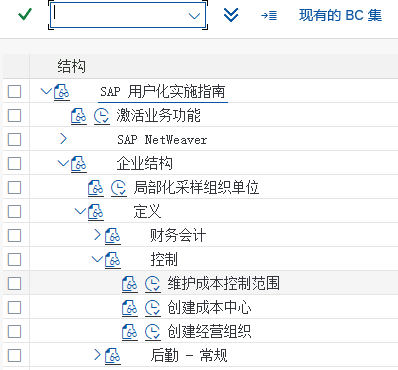
画面 1教材《S4.docx》· CO 任务 01 创建成本控制范围 · 原图 01_1_image314.png 弹出选择框 选择维护成本控制范围

画面 2教材《S4.docx》· CO 任务 01 创建成本控制范围 · 原图 02_1_image315.png 点击新条目,录入公司代码C999
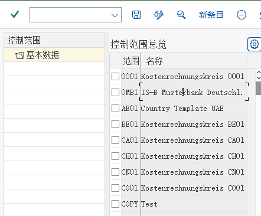
画面 3教材《S4.docx》· CO 任务 01 创建成本控制范围 · 原图 03_1_image316.png 
画面 4教材《S4.docx》· CO 任务 01 创建成本控制范围 · 原图 04_1_image317.png
{kind=link}
{kind=link}
将公司代码分配给成本控制范围
OX19
画面 5教材《S4.docx》· CO 任务 02 将公司代码分配给成本控制范围 · 原图 01_1_image318.png TCODE代码：OX19
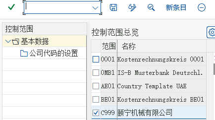
画面 6教材《S4.docx》· CO 任务 02 将公司代码分配给成本控制范围 · 原图 02_1_image319.png 选中 C999，双击公司代码设置

画面 7教材《S4.docx》· CO 任务 02 将公司代码分配给成本控制范围 · 原图 03_1_image320.png 点击新条目
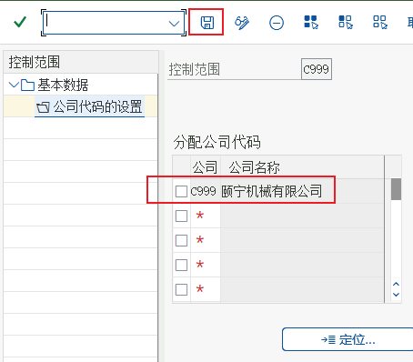
画面 8教材《S4.docx》· CO 任务 02 将公司代码分配给成本控制范围 · 原图 04_1_image321.png 原书提示将 C999 添加到成本控制范围
{kind=link}
{kind=link}
维护成本控制范围
控制－一般控制－组织结构－维护成本控制范围

画面 9教材《S4.docx》· CO 任务 03 维护成本控制范围 · 原图 01_1_image322.png 弹出选择活动，点击维护成本控制范围
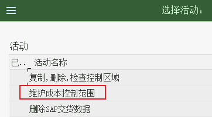
画面 10教材《S4.docx》· CO 任务 03 维护成本控制范围 · 原图 02_1_image323.png 双击 C999，维护基本数据

画面 11教材《S4.docx》· CO 任务 03 维护成本控制范围 · 原图 03_1_image324.png 
画面 12教材《S4.docx》· CO 任务 03 维护成本控制范围 · 原图 04_1_image325.png 原书提示保存后，点击返回，选中 C999，双击“激活组建/控制标识”系统会提示 C999 成本中心标准层次不存在，点击是。
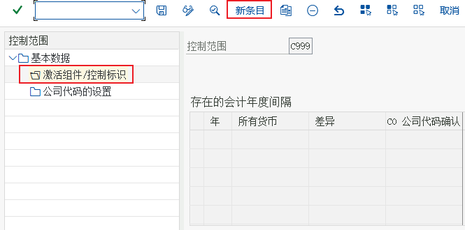
画面 13教材《S4.docx》· CO 任务 03 维护成本控制范围 · 原图 05_1_image326.png 点击新条目，输入起始财年，比如2021年。

画面 14教材《S4.docx》· CO 任务 03 维护成本控制范围 · 原图 06_1_image327.png 
画面 15教材《S4.docx》· CO 任务 03 维护成本控制范围 · 原图 06_2_image328.png 原书提示会计年度是从…年的概念，将来如果配置没有变化，不需要每年都维护
{kind=link}
{kind=link}
B 成本中心标准层次与成本中心组 1 个任务
一个任务做完全套：OKEON 维护标准层次 → 建 MFG 制造部 → 建总部 HQ → 在 MFG 下建 1001 Workshops / 1002 Warehouse，在 HQ 下建 2001–2006。创建时的黄色警告可以略过。
维护成本中心组和成本中心
OKEON会计核算－控制－成本中心会计－主数据－标准层次－OKEON-更改

画面 16教材《S4.docx》· CO 任务 04 维护成本中心组和成本中心 · 原图 01_1_image331.png 
画面 17教材《S4.docx》· CO 任务 04 维护成本中心组和成本中心 · 原图 01_2_image332.png 点击保存就不用每次进来输入成本控制范围了

画面 18教材《S4.docx》· CO 任务 04 维护成本中心组和成本中心 · 原图 02_1_image333.png 
画面 19教材《S4.docx》· CO 任务 04 维护成本中心组和成本中心 · 原图 02_2_image334.png 点击保存，选中C999,然后如下图操作

画面 20教材《S4.docx》· CO 任务 04 维护成本中心组和成本中心 · 原图 03_1_image337.png 选择较低组，进入如下页面

画面 21教材《S4.docx》· CO 任务 04 维护成本中心组和成本中心 · 原图 04_1_image338.png 再创建一个总部

画面 22教材《S4.docx》· CO 任务 04 维护成本中心组和成本中心 · 原图 05_1_image339.png 选择 MFG，选择新建成本中心，输入如下字段，并保存，黄色警告，可以略过。

画面 23教材《S4.docx》· CO 任务 04 维护成本中心组和成本中心 · 原图 06_1_image340.jpeg 
画面 24教材《S4.docx》· CO 任务 04 维护成本中心组和成本中心 · 原图 06_2_image341.png 原书提示创建其他的成本中心
画面 25教材《S4.docx》· CO 任务 04 维护成本中心组和成本中心 · 原图 07_1_image344.jpeg 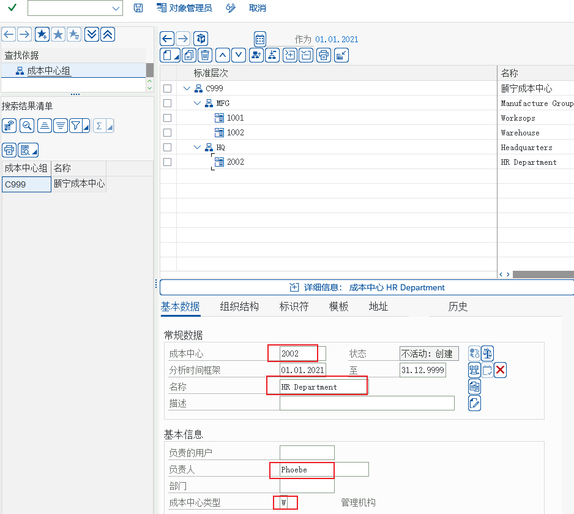
画面 26教材《S4.docx》· CO 任务 04 维护成本中心组和成本中心 · 原图 08_1_image345.png 
画面 27教材《S4.docx》· CO 任务 04 维护成本中心组和成本中心 · 原图 09_1_image346.png 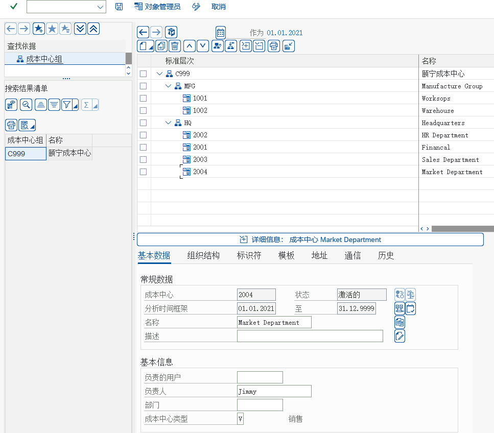
画面 28教材《S4.docx》· CO 任务 04 维护成本中心组和成本中心 · 原图 09_2_image347.png 
画面 29教材《S4.docx》· CO 任务 04 维护成本中心组和成本中心 · 原图 09_3_image348.png 
画面 30教材《S4.docx》· CO 任务 04 维护成本中心组和成本中心 · 原图 10_1_image349.png 
画面 31教材《S4.docx》· CO 任务 04 维护成本中心组和成本中心 · 原图 10_2_image350.png
{kind=link}
{kind=link}
C 成本要素主数据 5 个任务
初级成本要素（KA01，与 FI 损益类科目一一对应，类别 1）+ 次级成本要素（KA06，CO 专用）+ 成本要素组（KAH1）。任务是「改成本要素」与「维护缺省科目分配」（教材这两节文字与步骤有缺漏，本页末尾给了补充手顺）。
新建初级成本要素
KA01CO 用“成本要素”来管理成本流，成本要素和财务会计里的科目类似
会计－控制－成本中心会计－主数据－成本要素－单个处理－KA01-创建初级成本
画面 32教材《S4.docx》· CO 任务 05 新建初级成本要素 · 原图 01_1_image352.png lu41010101

画面 33教材《S4.docx》· CO 任务 05 新建初级成本要素 · 原图 02_1_image353.png 
画面 34教材《S4.docx》· CO 任务 05 新建初级成本要素 · 原图 02_2_image354.png 原书提示重复上述步骤，所有损益类科目都是初级成本要素，除了 41010901 生产成本－生产订单差异的成本要素类别是 “ 22 外部结算”，其他所有初级成本要素的类别都是 “ 1 初级成本/成本降低产生的利润”解释“41010901 生产成本－生产订单差异”是生产订单结算产生的，是管理会计计算初结果后，使用一种特殊的成本要素类别“22 外部结算”。

画面 35教材《S4.docx》· CO 任务 05 新建初级成本要素 · 原图 03_1_image357.png 
画面 36教材《S4.docx》· CO 任务 05 新建初级成本要素 · 原图 04_1_image358.png 
画面 37教材《S4.docx》· CO 任务 05 新建初级成本要素 · 原图 04_2_image359.png 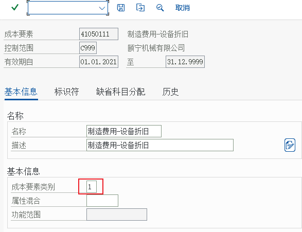
画面 38教材《S4.docx》· CO 任务 05 新建初级成本要素 · 原图 04_3_image362.png 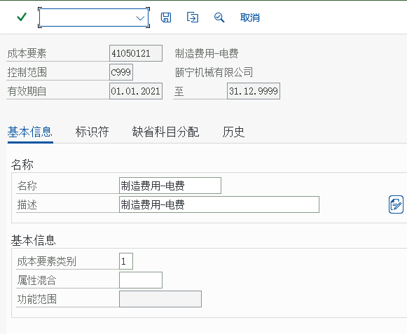
画面 39教材《S4.docx》· CO 任务 05 新建初级成本要素 · 原图 04_4_image363.png 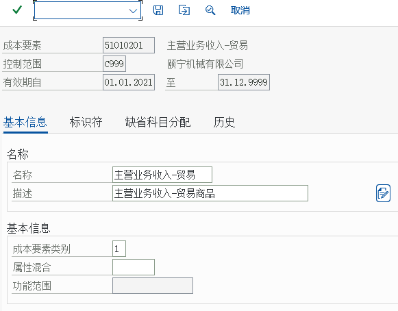
画面 40教材《S4.docx》· CO 任务 05 新建初级成本要素 · 原图 05_1_image364.png 
画面 41教材《S4.docx》· CO 任务 05 新建初级成本要素 · 原图 05_2_image365.png 
画面 42教材《S4.docx》· CO 任务 05 新建初级成本要素 · 原图 05_3_image366.png 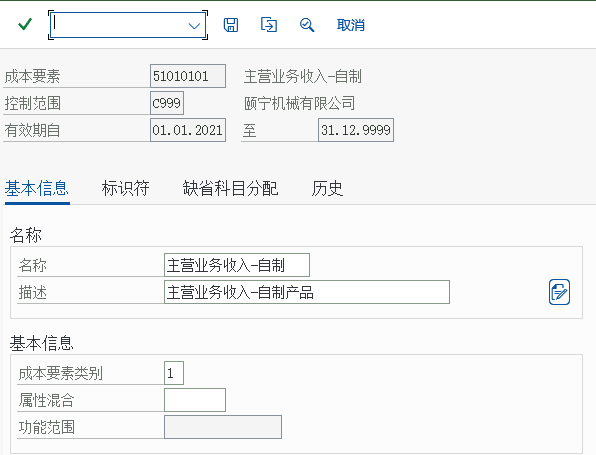
画面 43教材《S4.docx》· CO 任务 05 新建初级成本要素 · 原图 05_4_image367.png 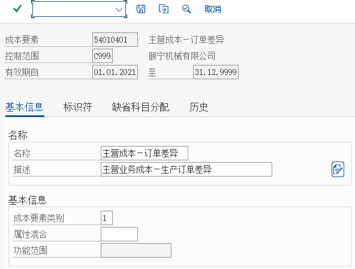
画面 44教材《S4.docx》· CO 任务 05 新建初级成本要素 · 原图 06_1_image368.png 
画面 45教材《S4.docx》· CO 任务 05 新建初级成本要素 · 原图 06_2_image369.png 
画面 46教材《S4.docx》· CO 任务 05 新建初级成本要素 · 原图 06_3_image372.png 
画面 47教材《S4.docx》· CO 任务 05 新建初级成本要素 · 原图 06_4_image373.png 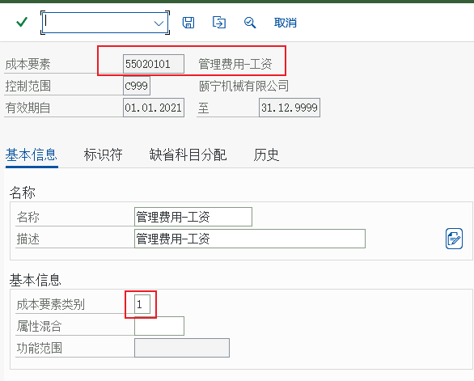
画面 48教材《S4.docx》· CO 任务 05 新建初级成本要素 · 原图 07_1_image374.png 
画面 49教材《S4.docx》· CO 任务 05 新建初级成本要素 · 原图 07_2_image375.png 
画面 50教材《S4.docx》· CO 任务 05 新建初级成本要素 · 原图 07_3_image378.png 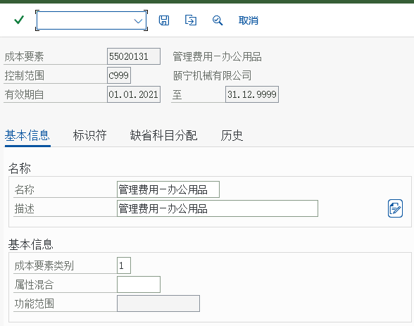
画面 51教材《S4.docx》· CO 任务 05 新建初级成本要素 · 原图 07_4_image379.png 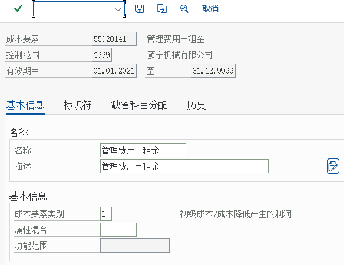
画面 52教材《S4.docx》· CO 任务 05 新建初级成本要素 · 原图 08_1_image380.png 
画面 53教材《S4.docx》· CO 任务 05 新建初级成本要素 · 原图 09_1_image381.png
{kind=link}
{kind=link}
{kind=link}
{kind=link}
{kind=link}
{kind=link}
{kind=link}
{kind=link}
建立次级成本要素
KA06会计－控制－成本中心会计－主数据－成本要素－单个处理－KA06-创建次级成本

画面 54教材《S4.docx》· CO 任务 06 建立次级成本要素 · 原图 01_1_image382.png 
画面 55教材《S4.docx》· CO 任务 06 建立次级成本要素 · 原图 02_1_image383.png 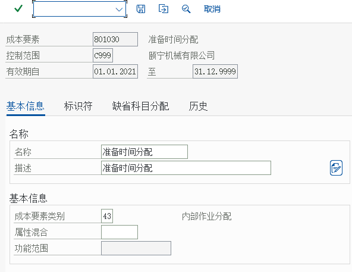
画面 56教材《S4.docx》· CO 任务 06 建立次级成本要素 · 原图 03_1_image384.png 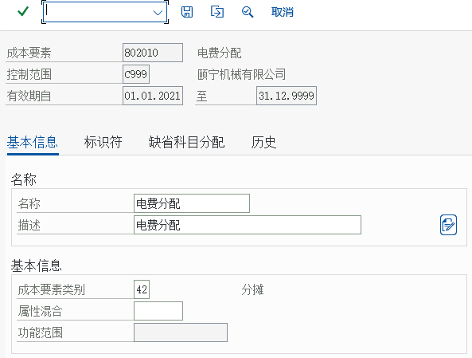
画面 57教材《S4.docx》· CO 任务 06 建立次级成本要素 · 原图 03_2_image385.png 
画面 58教材《S4.docx》· CO 任务 06 建立次级成本要素 · 原图 03_3_image386.png 43 是和内部作业相关的成本要素
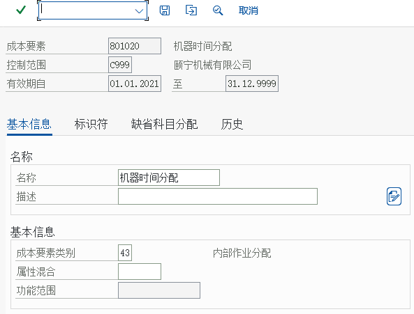
画面 59教材《S4.docx》· CO 任务 06 建立次级成本要素 · 原图 04_1_image387.png 
画面 60教材《S4.docx》· CO 任务 06 建立次级成本要素 · 原图 05_1_image388.png 
画面 61教材《S4.docx》· CO 任务 06 建立次级成本要素 · 原图 06_1_image389.png 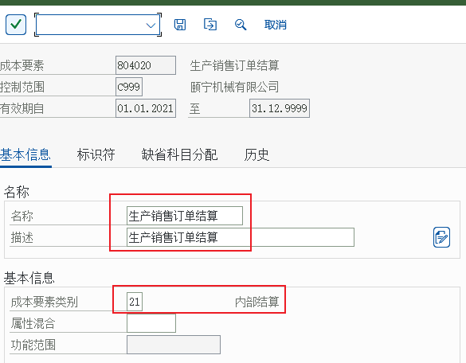
画面 62教材《S4.docx》· CO 任务 06 建立次级成本要素 · 原图 06_2_image390.png
{kind=link}
{kind=link}
{kind=link}
{kind=link}
新建成本要素组
我们可以将公司的成本要素按层次结构来管理，这种成本要素组可用根据需要定义任意多个会计－控制－成本要素会计－主数据－成本要素组－KAH1 创建

画面 63教材《S4.docx》· CO 任务 07 新建成本要素组 · 原图 01_1_image391.png 
画面 64教材《S4.docx》· CO 任务 07 新建成本要素组 · 原图 02_1_image392.png 
画面 65教材《S4.docx》· CO 任务 07 新建成本要素组 · 原图 03_1_image393.png 点击较低层次

画面 66教材《S4.docx》· CO 任务 07 新建成本要素组 · 原图 04_1_image394.png 选中 PRI 点击成本要素键
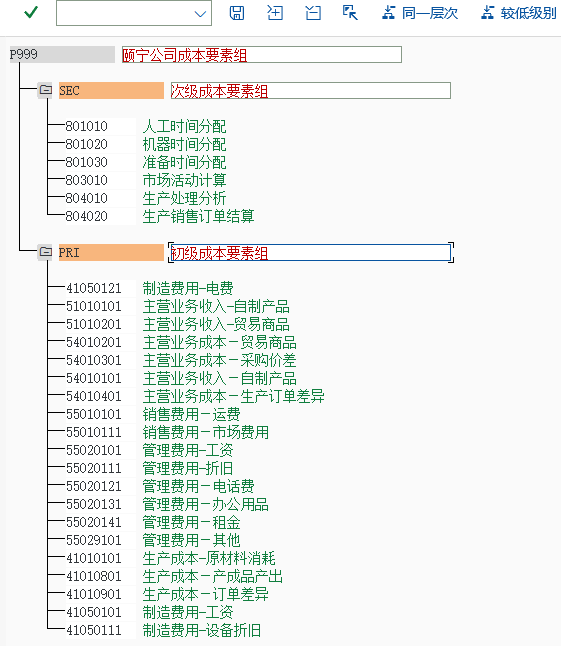
画面 67教材《S4.docx》· CO 任务 07 新建成本要素组 · 原图 05_1_image395.png 
画面 68教材《S4.docx》· CO 任务 07 新建成本要素组 · 原图 05_2_image396.png
{kind=link}
更改初级成本要素

画面 69教材《S4.docx》· CO 任务 09 · 原图 01_1_image398.png 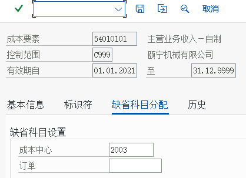
画面 70教材《S4.docx》· CO 任务 09 · 原图 01_2_image399.png 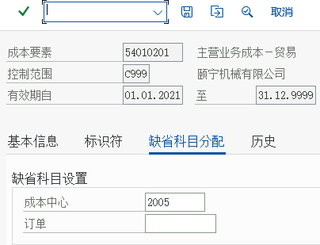
画面 71教材《S4.docx》· CO 任务 09 · 原图 01_3_image400.png 
画面 72教材《S4.docx》· CO 任务 09 · 原图 01_4_image401.png
{kind=link}
{kind=link}
D 作业类型与作业价格 3 个任务
建作业类型 LAB 人工工时 / MAC 机器工时 / SET 准备工时（KL01），建作业类型组（KLH1），再给成本中心 1001 维护计划作业量与价格（KP26）。这一组是「成本中心成本流向产品成本」的通道。
新建作业类型
KL01
画面 73教材《S4.docx》· CO 任务 10 新建作业类型 · 原图 01_1_image403.png 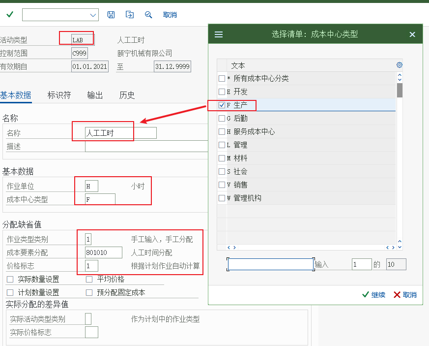
画面 74教材《S4.docx》· CO 任务 10 新建作业类型 · 原图 01_2_image404.png 
画面 75教材《S4.docx》· CO 任务 10 新建作业类型 · 原图 01_3_image407.png 会计－控制－成本中心会计－主数据－作业类型－单个处理－KL01-创建

画面 76教材《S4.docx》· CO 任务 10 新建作业类型 · 原图 02_1_image408.png
{kind=link}
新建作业类型组

画面 77教材《S4.docx》· CO 任务 11 新建作业类型组 · 原图 01_1_image409.png 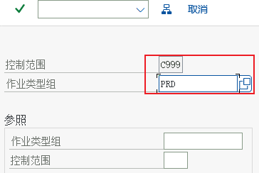
画面 78教材《S4.docx》· CO 任务 11 新建作业类型组 · 原图 01_2_image410.png 点击作业类型按钮

画面 79教材《S4.docx》· CO 任务 11 新建作业类型组 · 原图 02_1_image411.png
{kind=link}
设置作业输出价格
KP26
画面 80教材《S4.docx》· CO 任务 12 设置作业输出价格 · 原图 01_1_image412.png 会计核算－控制－成本中心会计－计划－作业输出/价格－KP26－更改

画面 81教材《S4.docx》· CO 任务 12 设置作业输出价格 · 原图 02_1_image413.png 点击工具栏上的概览屏幕(F5)

画面 82教材《S4.docx》· CO 任务 12 设置作业输出价格 · 原图 03_1_image414.png 
画面 83教材《S4.docx》· CO 任务 12 设置作业输出价格 · 原图 04_1_image415.png 点击保存，回到如下页面，继续维护机器工时

画面 84教材《S4.docx》· CO 任务 12 设置作业输出价格 · 原图 05_1_image416.png 保存，返回继续维护 SET

画面 85教材《S4.docx》· CO 任务 12 设置作业输出价格 · 原图 06_1_image417.png 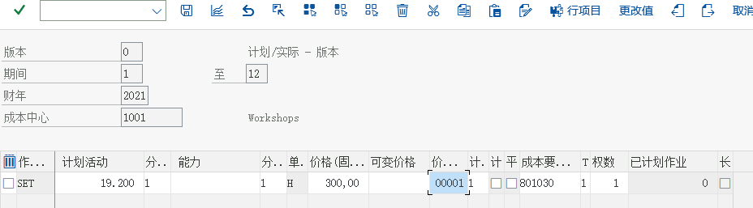
画面 86教材《S4.docx》· CO 任务 12 设置作业输出价格 · 原图 07_1_image418.png
{kind=link}
E 编号范围与费用归集 3 个任务
先把成本控制凭证的编号范围分给 C999，然后开始有真数据：FB60 录房租发票 90000 元到成本中心 2001，FB50 录电费 25500 元到成本中心 2006 —— 费用的「账户分配」就是 CO 的入口。
维护成本控制凭证的编号范围
控制－一般控制－组织结构－维护成本控制凭证的编号范围

画面 87教材《S4.docx》· CO 任务 13 维护成本控制凭证的编号范围 · 原图 01_1_image419.png 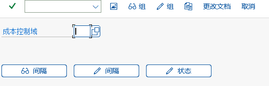
画面 88教材《S4.docx》· CO 任务 13 维护成本控制凭证的编号范围 · 原图 01_2_image420.png 点击复制键

画面 89教材《S4.docx》· CO 任务 13 维护成本控制凭证的编号范围 · 原图 02_1_image421.png 
画面 90教材《S4.docx》· CO 任务 13 维护成本控制凭证的编号范围 · 原图 03_1_image422.png 直接复制，程序显示不能复制，点击组菜单，点击维护组

画面 91教材《S4.docx》· CO 任务 13 维护成本控制凭证的编号范围 · 原图 04_1_image423.png 
画面 92教材《S4.docx》· CO 任务 13 维护成本控制凭证的编号范围 · 原图 05_1_image424.png
{kind=link}
输入费用供应商发票
FB60解释：颐宁公司收到佳音地产公司房租发票一张，金额为 90000，这里我们需把这笔费用计入 2001 财务部成本中心

画面 93教材《S4.docx》· CO 任务 14 输入费用供应商发票 · 原图 01_1_image425.png 
画面 94教材《S4.docx》· CO 任务 14 输入费用供应商发票 · 原图 01_2_image426.png 发票日期 2021年3月17日过帐日期 2021年3月17日金额 90000
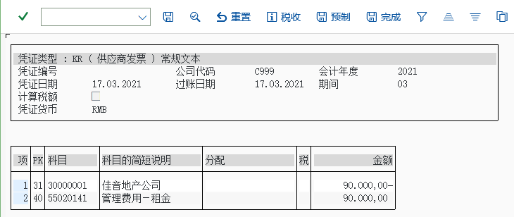
画面 95教材《S4.docx》· CO 任务 14 输入费用供应商发票 · 原图 02_1_image427.png 原书提示点击保存按钮，将会出现凭证被保存的提示。
{kind=link}
| 输入值（教材画面）：字段 | 值 |
|---|---|
| 供应商 | 30000001 |
| 总帐科目 | 55020141 |
| 凭证货币计的金额 | 90000 |
| 成本中心 | 2001 |
输入普通费用发票
FB50解释：颐宁公司又支付了一笔 25500 元的电费，这笔电费被记录到了 2006 行政部成本中心。这里我们用一般的总账凭证的方式输入这张凭证

画面 96教材《S4.docx》· CO 任务 15 输入普通费用发票 · 原图 01_1_image428.png 原书提示凭证抬头文本 11 月电费总帐科目 10020111 D/C 贷方
原书截图有误，贷方不能录入成本中心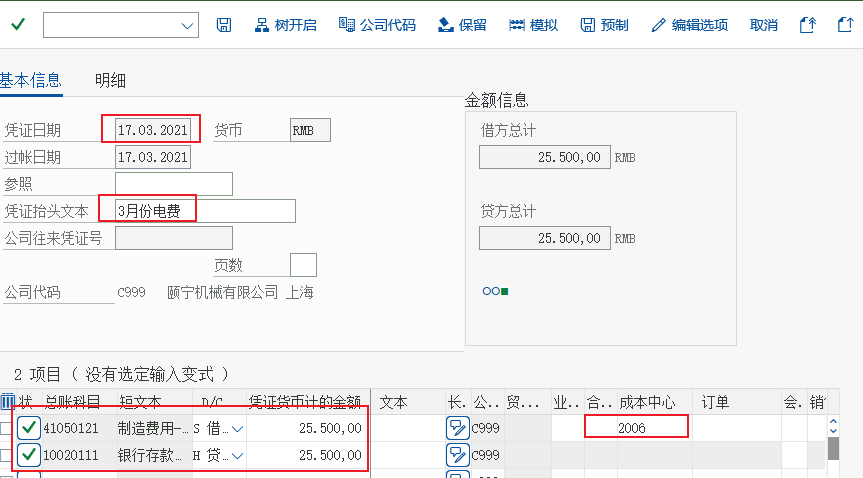
画面 97教材《S4.docx》· CO 任务 15 输入普通费用发票 · 原图 02_1_image429.png 点击模拟 点击保存

画面 98教材《S4.docx》· CO 任务 15 输入普通费用发票 · 原图 03_1_image430.png 保存

画面 99教材《S4.docx》· CO 任务 15 输入普通费用发票 · 原图 04_1_image431.png
{kind=link}
| 输入值（教材画面）：字段 | 值 |
|---|---|
| 凭证货币计的金额 | 25500 |
| 成本中心 | 2006 |
| 凭证货币计的金额 | 25500 |
F 报表、重过账与统计指标 4 个任务
看报表（实际/计划/差异）→ 发现记错就用 KB61 重过账改成本中心 → 建统计指标 RENT 并录入各成本中心的面积（KB31N）—— 这三步是分配前的全部准备。
运行成本中心报表
会计－控制－成本中心会计－信息系统－成本中心会计的报表－计划/实际比较－成本中心：实际/计划/差异

画面 100教材《S4.docx》· CO 任务 16 运行成本中心报表 · 原图 01_1_image432.png 
画面 101教材《S4.docx》· CO 任务 16 运行成本中心报表 · 原图 02_1_image433.png 
画面 102教材《S4.docx》· CO 任务 16 运行成本中心报表 · 原图 03_1_image434.png
| 输入值（教材画面）：字段 | 值 |
|---|---|
| 成本控制范围 | C999 |
| 会计年度 | 2006 |
| 开始期间 | 1 |
| 终止期间 | 12 |
| 计划版本 | 0 |
| 成本中心价值 | 2001 |
| 点击闹钟运行或者按 | F8 |
成本中心数据重过帐
KB61解释：90000 元的房租被错误的记录到了 2001 财务部成本中心，我们不必冲销财务凭证。只需要在管理会计中做“重过账”重新将其指定到 2006 行政部成本中心

画面 103教材《S4.docx》· CO 任务 17 成本中心数据重过帐 · 原图 01_1_image435.png 
画面 104教材《S4.docx》· CO 任务 17 成本中心数据重过帐 · 原图 01_2_image436.png 运行

画面 105教材《S4.docx》· CO 任务 17 成本中心数据重过帐 · 原图 02_1_image437.png 在这个屏幕里，我们将这笔费用重新指定到 2006 行政部成本中心，然后 点击保存CTRL+S

画面 106教材《S4.docx》· CO 任务 17 成本中心数据重过帐 · 原图 03_1_image438.png 重新查询报表

画面 107教材《S4.docx》· CO 任务 17 成本中心数据重过帐 · 原图 04_1_image439.png 
画面 108教材《S4.docx》· CO 任务 17 成本中心数据重过帐 · 原图 05_1_image440.png 原书提示可以看到成本中心 2001 下的租金已经转到了 2006
新建统计指标
KK01解释：颐宁公司决定使用各成本中心占地面积来分配房租费用。在 SAP 管理会计中，类似占地面积等非财务指标,可以用“ 统计指标” 来记录。这里我们建立一个物业租金面积的统计指标。
会计－控制－成本中心会计－主数据－统计指标－单个处理－KK01-创建
画面 109教材《S4.docx》· CO 任务 18 新建统计指标 · 原图 01_1_image441.png 
画面 110教材《S4.docx》· CO 任务 18 新建统计指标 · 原图 01_2_image442.png 原书提示录入如下数据，保存
画面 111教材《S4.docx》· CO 任务 18 新建统计指标 · 原图 02_1_image445.png
输入统计指标数量
KB31N会计－控制－成本中心会计－实际记账－统计指标－KB31N-输入

画面 112教材《S4.docx》· CO 任务 19 输入统计指标数量 · 原图 01_1_image446.png 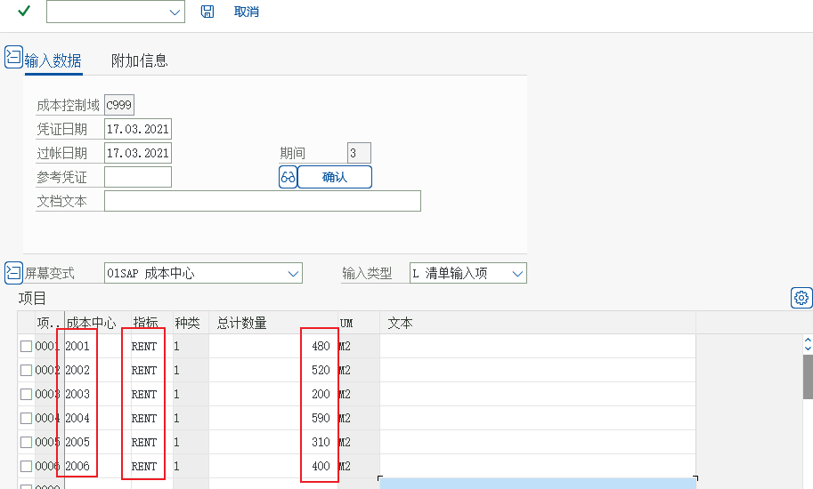
画面 113教材《S4.docx》· CO 任务 19 输入统计指标数量 · 原图 02_1_image447.png 保存

画面 114教材《S4.docx》· CO 任务 19 输入统计指标数量 · 原图 03_1_image448.png
{kind=link}
G 分配与分摊（成本中心之间搬成本） 7 个任务
定义分配循环 DRENT（按面积分房租）并执行 KSV5 → 看结果；再定义分摊循环 AUTILI（按 75%/25% 分电费，用次级成本要素 802010）并执行 KSU5 → 看结果。这一组就是月结的核心动作。
定义分配循环
解释：颐宁公司确定的分配房租费用的规则是将记录到 2006 行政部成本中心的所有房租费用按照总部各成本中心的占地面积分配给各成本中心。制造部的工作地点不在这个办公物业中，所以不需要承担房租费用。现在我们把这个分配规则定义在 SAP 管理会计中，SAP 称为“分配循环”

画面 115教材《S4.docx》· CO 任务 20 定义分配循环 · 原图 01_1_image449.png 
画面 116教材《S4.docx》· CO 任务 20 定义分配循环 · 原图 01_2_image450.png 
画面 117教材《S4.docx》· CO 任务 20 定义分配循环 · 原图 02_1_image451.png 在一个循环里，可以维护很多个分配标准，每个分配标准称为一个“段”，我们点击增加段
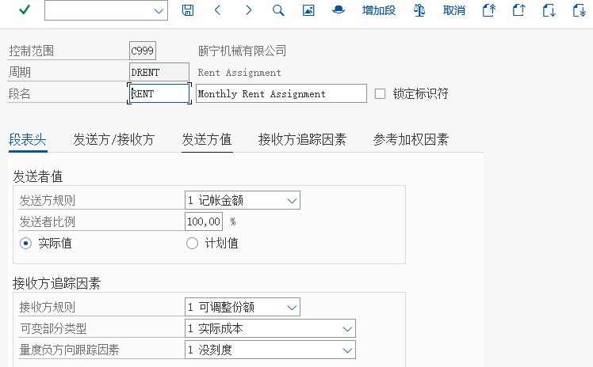
画面 118教材《S4.docx》· CO 任务 20 定义分配循环 · 原图 03_1_image452.png 在段表头，我们定义一些概览参数。发送方将成本发送出去，接收方接收成本。点击发送方/接收方

画面 119教材《S4.docx》· CO 任务 20 定义分配循环 · 原图 04_1_image453.png 说明解释：发送方将成本发送出去，接收方接收成本，所以这个分配规则的发送方是 2006 行政部，成本中心的 55020141 管理费用-租金成本要素，接收方是 HQ 总部成本中心组中的各成本中心点击接收方追踪因素

画面 120教材《S4.docx》· CO 任务 20 定义分配循环 · 原图 05_1_image454.png 说明解释：接收方追踪因素是指在多个接收方之间按什么标准分配成本，所以我们的规则是按照原书提示RENT 物业租金面积统计指标的实际统计值分配成本。
{kind=link}
分配
解释：完成了前面的准备工作，接下来要在这个月的月结时，将房租成本分配给了各成本中心
会计－控制－成本中心会计－期末结账－单一功能－分配－KSV5 分配
画面 121教材《S4.docx》· CO 任务 21 分配 · 原图 01_1_image455.png 
画面 122教材《S4.docx》· CO 任务 21 分配 · 原图 01_2_image456.png 原书提示期间填当月，指执行分配的期间解释：在这个屏幕中，我们填写执行分配的会计期间，我们可以一次运行几个分配循环，只需要将他们填写在下方的清单里即可。
点击运行
画面 123教材《S4.docx》· CO 任务 21 分配 · 原图 02_1_image457.png
显示成本中心分配到的租金
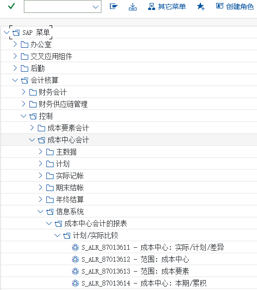
画面 124教材《S4.docx》· CO 任务 22 显示成本中心分配到的租金 · 原图 01_1_image458.png 会计－控制－成本中心会计－信息系统－成本中心会计的报表－计划/实际比较－成本中心：实际/计划/差异

画面 125教材《S4.docx》· CO 任务 22 显示成本中心分配到的租金 · 原图 02_1_image459.png 
画面 126教材《S4.docx》· CO 任务 22 显示成本中心分配到的租金 · 原图 02_2_image460.png 点击左边各成本中心，可查看到各成本中心分配到的房租费用

画面 127教材《S4.docx》· CO 任务 22 显示成本中心分配到的租金 · 原图 03_1_image461.png
{kind=link}
定义分摊循环
在本例里我们使用802010 电费作为次级成本要素来分摊41050121 电费初级成本要素为了说明在分摊中成本流的形态发生了怎样的变化。本例不是实际的场景
会计－控制－成本中心会计－期末结账－当前设置－定义评估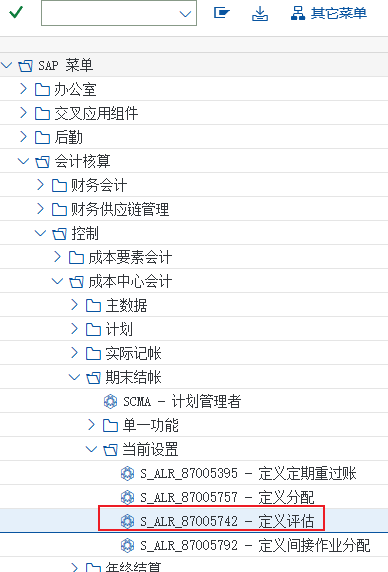
画面 128教材《S4.docx》· CO 任务 23 定义分摊循环 · 原图 01_1_image462.png 
画面 129教材《S4.docx》· CO 任务 23 定义分摊循环 · 原图 01_2_image463.png 解释：和分配类似，我们首先需要把分摊的规则定义在“分摊循环”里，在这个屏幕里，我们给分摊循环起一个编码，并说明他的有效开始时间

画面 130教材《S4.docx》· CO 任务 23 定义分摊循环 · 原图 02_1_image466.png 在一个循环里可以维护很多分摊标准，每个分摊标准称为一个段。点击增加段

画面 131教材《S4.docx》· CO 任务 23 定义分摊循环 · 原图 03_1_image467.png 解释：和分配不同，分摊中成本流转使用的是次级成本要素，所以在这个屏幕里需要指定相关的次级成本要素。我们既可以像现在这样指定一个固定的分摊成本要素，也可以建立一种从原始的初级成本要素到分摊成本要素的对应关系，SAP 称之为分配结构（屏幕中分摊成本要素的下方）此外，本例中我们使用“固定百分比”的规则在接收方中分摊成本。

画面 132教材《S4.docx》· CO 任务 23 定义分摊循环 · 原图 04_1_image468.png 发送方是 2006 行政部成本中心的 41050121 成本要素，接收方是 MFG 制造部成本中心的各成本中心
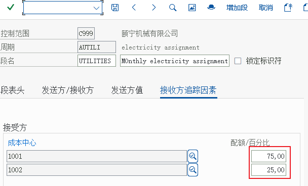
画面 133教材《S4.docx》· CO 任务 23 定义分摊循环 · 原图 05_1_image469.png 原书提示这里表明，1001 及 1002 各占的比例原书提示填写完毕，点击保存即可
{kind=link}
{kind=link}
分摊
完成了准备工作，我们来执行这个分摊循环

画面 134教材《S4.docx》· CO 任务 24 分摊 · 原图 01_1_image470.png 
画面 135教材《S4.docx》· CO 任务 24 分摊 · 原图 01_2_image471.png
点击执行

画面 136教材《S4.docx》· CO 任务 25 点击执行 · 原图 01_1_image474.png
显示成本中心分摊到的电费
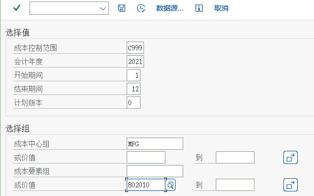
画面 137教材《S4.docx》· CO 任务 26 显示成本中心分摊到的电费 · 原图 01_1_image475.png 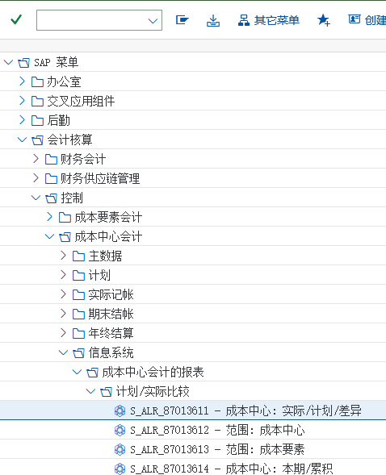
画面 138教材《S4.docx》· CO 任务 26 显示成本中心分摊到的电费 · 原图 01_2_image476.png 会计－控制－成本中心会计－信息系统－成本中心会计的报表－计划/实际比较－成本中心：实际/计划/差异

画面 139教材《S4.docx》· CO 任务 26 显示成本中心分摊到的电费 · 原图 02_1_image477.png 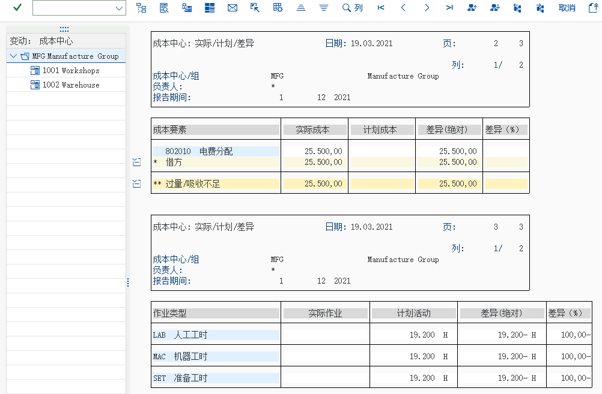
画面 140教材《S4.docx》· CO 任务 26 显示成本中心分摊到的电费 · 原图 02_2_image478.png 说明注意：我们显示的 802010 电费分摊是一个次级成本要素，它是公司内部成本流转使用的，是财务会计中没有的科目
{kind=link}
{kind=link}
{kind=link}
H 内部订单类型与结算配置 4 个任务
为「国内用户大会」建订单类型 PMKT 市场活动与编号范围，检查结算参数文件的设置，维护分配结构 A1（接收方类型 CTR + 结算成本要素 803010），最后给结算凭证分编号范围。
创建内部订单类型并维护编号范围
解释：颐宁公司将要举行 “ 国内用户大会” 为了这次市场推广活动，公司会发生很多费用，我们希望能对这次活动单独核算费用，而不是在成本中心各种费用中。公司中类似的“ 项目”还有很多，在 SAP 管理会计中我们可以用“内部订单”来管理这些项目。项目有各种类型，如市场类的，研发类的，工会活动类的等等。

画面 141教材《S4.docx》· CO 任务 27 创建内部订单类型并维护编号范围 · 原图 01_1_image479.png 
画面 142教材《S4.docx》· CO 任务 27 创建内部订单类型并维护编号范围 · 原图 01_2_image480.png 
画面 143教材《S4.docx》· CO 任务 27 创建内部订单类型并维护编号范围 · 原图 01_3_image481.png 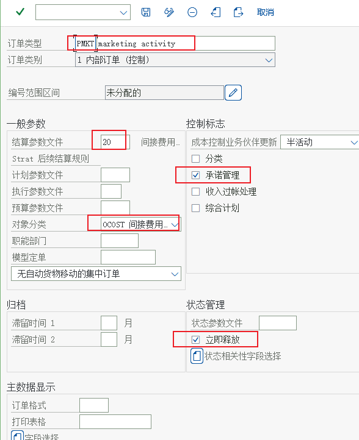
画面 144教材《S4.docx》· CO 任务 27 创建内部订单类型并维护编号范围 · 原图 02_1_image485.png 
画面 145教材《S4.docx》· CO 任务 27 创建内部订单类型并维护编号范围 · 原图 02_2_image486.png 保存后，点击编号范围区间
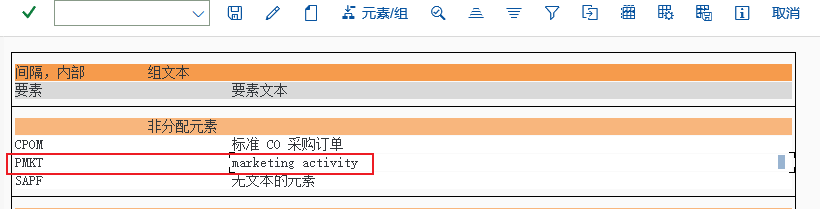
画面 146教材《S4.docx》· CO 任务 27 创建内部订单类型并维护编号范围 · 原图 03_1_image487.png 将光标选中“未分配的”里的 PMKT 市场活动，点击然后 勾上市场和广告需求。订单前面的方框，再点击
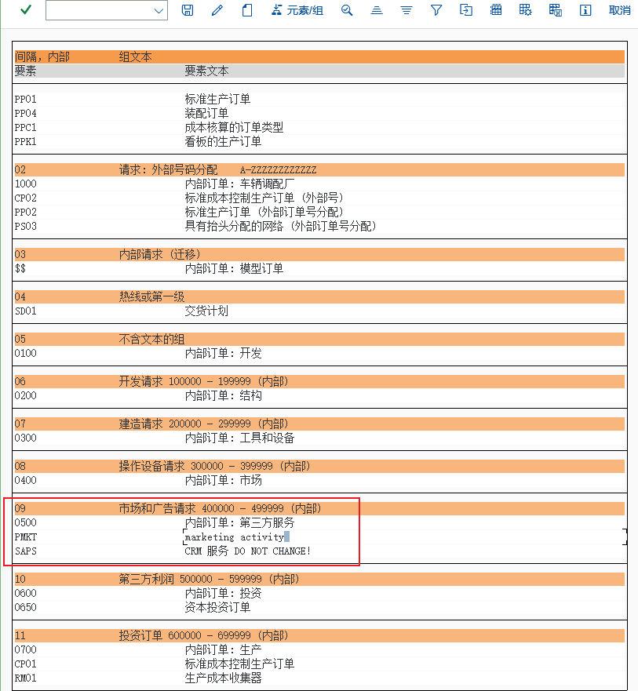
画面 147教材《S4.docx》· CO 任务 27 创建内部订单类型并维护编号范围 · 原图 04_1_image488.png 原书提示点击保存
{kind=link}
{kind=link}
{kind=link}
维护内部订单的结算参数文件
解释：为了举行“国内用户大会”公司创建了“市场活动”订单类型，其中结算参数文件选择的是系统中已经有的 100，本步骤中，我们来检查结算参数文件 100 的设置

画面 148教材《S4.docx》· CO 任务 28 维护内部订单的结算参数文件 · 原图 01_1_image490.png 双击“维护结算参数文件”

画面 149教材《S4.docx》· CO 任务 28 维护内部订单的结算参数文件 · 原图 02_1_image491.png 
画面 150教材《S4.docx》· CO 任务 28 维护内部订单的结算参数文件 · 原图 03_1_image492.png 双击“结算参数文件100”，
如果没有，则点击新条目，然后回头修改上一步的参结算参数文件，当时我们选择的为20
画面 151教材《S4.docx》· CO 任务 28 维护内部订单的结算参数文件 · 原图 04_1_image493.png
维护内部订单结算的分配结构
后台－控制－内部订单－实际过账－结算－维护分配结构

画面 152教材《S4.docx》· CO 任务 29 维护内部订单结算的分配结构 · 原图 01_1_image494.png 
画面 153教材《S4.docx》· CO 任务 29 维护内部订单结算的分配结构 · 原图 02_1_image495.png 双击分配

画面 154教材《S4.docx》· CO 任务 29 维护内部订单结算的分配结构 · 原图 03_1_image496.png 选中 001 行，然后点击左边的源文件，如果没有001，则点击新的条目，双击左边的“源”
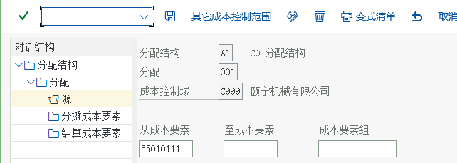
画面 155教材《S4.docx》· CO 任务 29 维护内部订单结算的分配结构 · 原图 04_1_image497.png 原书提示点击左边的“结算成本要素”
画面 156教材《S4.docx》· CO 任务 29 维护内部订单结算的分配结构 · 原图 05_1_image498.png 点击新条目

画面 157教材《S4.docx》· CO 任务 29 维护内部订单结算的分配结构 · 原图 06_1_image499.png
{kind=link}
维护结算凭证编号范围
后台－控制－内部订单－实际过账－结算－维护结算凭证编号范围

画面 158教材《S4.docx》· CO 任务 30 维护结算凭证编号范围 · 原图 01_1_image500.png 
画面 159教材《S4.docx》· CO 任务 30 维护结算凭证编号范围 · 原图 01_2_image501.png 解释：对于 颐宁公司国内用户大会发生的费用，我们将通过创建市场活动类型内部订单来举行归集，然后结算到各个成本中心中去，结算完成时会产生相应的结算凭证。本步骤中我们将对结算凭证维护编号范围。
屏幕上方的是已经分配了号码范围的成本控制对象。成本控制对象 C999 还未分配。在未分配栏中选中 C999，点击 ，在标准会计凭证框内打勾，然后点击元素/组按钮 ，未找到用下图的01代替
画面 160教材《S4.docx》· CO 任务 30 维护结算凭证编号范围 · 原图 02_1_image502.png 原书提示看到已经分配了点击保存
I 内部订单业务与结算 4 个任务
用 KO04 在 PMKT 下建订单 500000 并维护结算规则（8 个成本中心的份额）→ FB50 把费用归集到订单 → KO88 结算到各成本中心 → 回报表确认（订单余额应清零）。
创建内部订单
KO04会计－控制－内部订单－主数据－KO04-订单管理员

画面 161教材《S4.docx》· CO 任务 31 创建内部订单 · 原图 01_1_image503.png 解释：我们已经创建了市场活动订单类型，我们将在此类型下创建内部订单来归集国内用户大会发生的费用。

画面 162教材《S4.docx》· CO 任务 31 创建内部订单 · 原图 02_1_image504.png 点击新建

画面 163教材《S4.docx》· CO 任务 31 创建内部订单 · 原图 03_1_image505.png 然后点击保存然后点击保存

画面 164教材《S4.docx》· CO 任务 31 创建内部订单 · 原图 04_1_image506.png 点击结算规则

画面 165教材《S4.docx》· CO 任务 31 创建内部订单 · 原图 05_1_image507.png 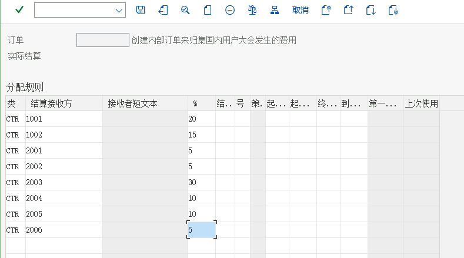
画面 166教材《S4.docx》· CO 任务 31 创建内部订单 · 原图 05_2_image508.png 录入上述信息并回车，得到如下结果：

画面 167教材《S4.docx》· CO 任务 31 创建内部订单 · 原图 06_1_image509.png 
画面 168教材《S4.docx》· CO 任务 31 创建内部订单 · 原图 06_2_image510.png 点击修改按钮，然后点击屏幕右方的控制数据
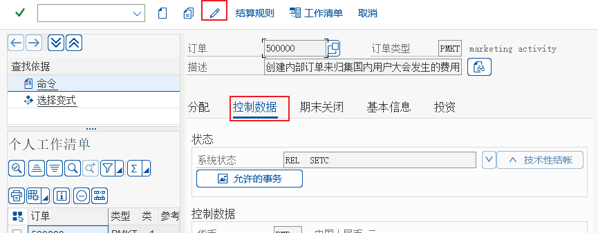
画面 169教材《S4.docx》· CO 任务 31 创建内部订单 · 原图 07_1_image511.png 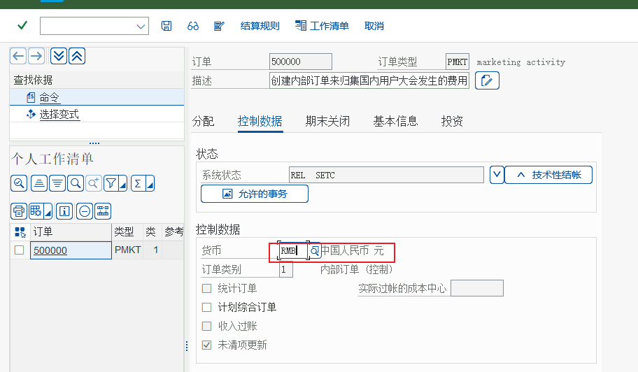
画面 170教材《S4.docx》· CO 任务 31 创建内部订单 · 原图 07_2_image512.png
{kind=link}
{kind=link}
{kind=link}
输入内部订单费用发票
FB50解释：
会计核算－财务会计－总帐－凭证录入－FB50-输入总账科目凭证
画面 171教材《S4.docx》· CO 任务 32 输入内部订单费用发票 · 原图 01_1_image513.png 
画面 172教材《S4.docx》· CO 任务 32 输入内部订单费用发票 · 原图 02_1_image514.png 点击模拟
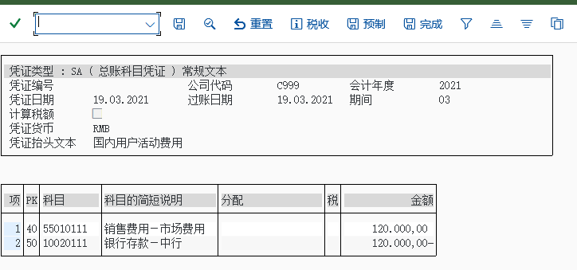
画面 173教材《S4.docx》· CO 任务 32 输入内部订单费用发票 · 原图 03_1_image515.png 点击保存
画面 174教材《S4.docx》· CO 任务 32 输入内部订单费用发票 · 原图 04_1_image516.png
{kind=link}
{kind=link}
内部订单的结算
KO88解释：颐宁公司举办了国内用户大会，并为此创建了内部订单来归集发生的费用。本步骤中我们将把订单中归集的费用结算到各个成本中心中去。
控制－内部订单－单一功能－结算－KO88-单个处理
画面 175教材《S4.docx》· CO 任务 33 内部订单的结算 · 原图 01_1_image517.png 
画面 176教材《S4.docx》· CO 任务 33 内部订单的结算 · 原图 02_1_image518.png 
画面 177教材《S4.docx》· CO 任务 33 内部订单的结算 · 原图 03_1_image519.png 注意无错误，运行已经完成
显示内部订单的结算结果
会计－控制－成本中心会计－信息系统－成本中心会计的报表－计划/实际比较－成本中心：实际/计划/差异

画面 178教材《S4.docx》· CO 任务 34 显示内部订单的结算结果 · 原图 01_1_image520.png 
画面 179教材《S4.docx》· CO 任务 34 显示内部订单的结算结果 · 原图 02_1_image521.png 
画面 180教材《S4.docx》· CO 任务 34 显示内部订单的结算结果 · 原图 02_2_image522.png 点击各成本中心查看报表
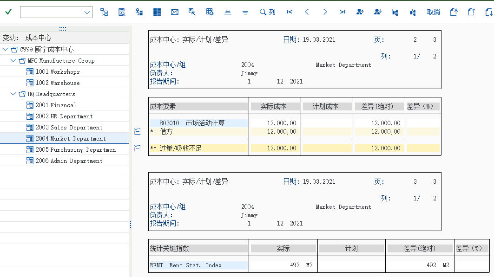
画面 181教材《S4.docx》· CO 任务 34 显示内部订单的结算结果 · 原图 03_1_image523.png
{kind=link}
补充：教材文字有缺漏的两个任务（任务 08 / 09）
任务 08「更改初级成本要素」在教材里没有任何手顺文字与截图；任务 09 的标题是空的，只有 4 张画面（成本要素 51010101 主营业务收入-自制、51010201 主营业务收入-贸易，以及 54010101 主营业务成本-自制 → 缺省成本中心 2003、54010201 主营业务成本-贸易 → 缺省成本中心 2005）。两节讲的其实是同一件事：用 KA02 修改成本要素，并维护「缺省科目分配」。
- 在
KA02（更改成本要素）里输入要改的成本要素编号（如 54010101 主营业务成本-自制），选择控制范围 C999，回车进入修改画面。 - 切到「缺省科目分配」页：维护缺省成本中心（教材画面：54010101 → 2003 销售部、54010201 → 2005 采购部）与可选的缺省订单。
- 点成本中心的 F4 帮助，可以看到可选成本中心与它们的负责人（2001 jaybo · 2002 Phoebe · 2003 Jimmy · 2004 Jimmy · 2005 WangWei · 2006 Sunny）—— 教材任务 09 的四张画面就是这一屏。
- 需要时再维护「标识符」页（成本要素的进一步分类）与「基本信息」页（名称、有效期）；保存即生效。
- 注意：初级成本要素的编号、类别、对应的 FI 科目建好之后不能随便改，改了会影响已有过账；缺省科目分配这类字段可以随时维护。